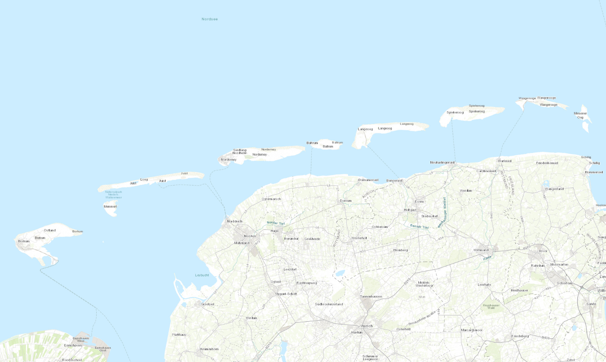

Geographic Overview

The East Frisian Islands are a chain of barrier islands located in the North Sea off the coast of Lower Saxony, Germany. They form a natural protection for the Wadden Sea and are known for their unique coastal landscapes, biodiversity, and tourism significance. The map displayed shows the geographic distribution of the major islands in this region.
Hover over islands to see details. Click on individual islands in the map to learn more about them.